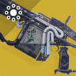

King's Fall
These are our equipment recommendations. They are not absolute, but rather are supposed to give you a general idea of which weapons to use in each encounter.
1. Totems
UNSTOPPABLE CHAMPIONS
all combat distances
redbars, majors and champions
Don't forget to adjust your gear according to the seasonal unstoppable mods. Depending on the available anti-champion mods, you may want to select different weapon types than those listed here.
Primary: any solar weapon / any unstoppable weapon
Your primary weapon to pop solar shields and stun champions with.
Special: Shotgun / Fusion Rifle
Your special weapon to deal with majors and champions.
Heavy: Machine Gun
Your heavy weapon to clear all types of adds with.
2. Warpriest
close combat distances
redbars, elites and majors
Primary: Trinity Ghoul / Submachine Gun / Hand Cannon
Your primary weapon to clear adds with.
Special: Shotgun / Fusion Rifle / Grenade Launcher
Your special weapon to assist with add-clear and killing elites and majors.
Heavy: Rockets / Linear Fusion Rifles
Your heavy weapon will be used to damage the boss.
3. Golgoroth
close combat distances
redbars and majors
Primary: Trinity Ghoul / Submachine Gun / Hand Cannon
Your primary weapon to clear adds with.

Special: Arbalest / Sniper
Your special weapon to use for certain mechanics or as a backup boss damage option.
Heavy: Rockets / Linear Fusion Rifles / Machineguns
Your heavy weapon will be used either for boss damage or to defend yourself from Axion Darts.
4. Daughters of Oryx
close combat distances
redbars and elites
Primary: Trinity Ghoul / Hand Cannon / Auto Rifle
Your primary weapon to clear adds and take out sniper enemies with.
Special: Sniper Rifle / Grenade Launcher
Your special weapon to assist with add-clear and killing elites.
Heavy: Rockets / Linear Fusion Rifles
Your heavy weapon will be used to damage the bosses.
5. Oryx, the Taken King
close combat distances
redbars, elites and majors
Primary: Trinity Ghoul / Hand Cannon / Auto Rifle
Your primary weapon to clear adds and take out sniper enemies.
Special: Grenade Launcher / Sniper Rifle
Your special weapon to assist with add-clear and killing elites.
Heavy: Rockets / Linear Fusion Rifles
Your heavy weapon will be used to damage the boss.